File: 000360.gt.txt (if the image is defective, simply delete all Arabic text and the line will be excluded)
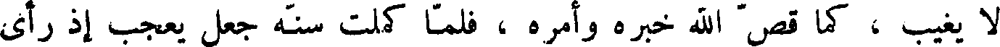
لا يغيب ، كما قص الله خبره وأمره ، فلما كملت سنة جعل يعجب إذ رأى
File: 000361.gt.txt (if the image is defective, simply delete all Arabic text and the line will be excluded)
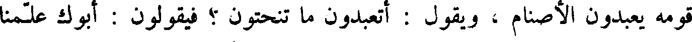
قومه يعبدون الأصنام ، ويقول : أتعبدون ما تنحتون ؟ فيقولون : أبوك علمنا
File: 000362.gt.txt (if the image is defective, simply delete all Arabic text and the line will be excluded)
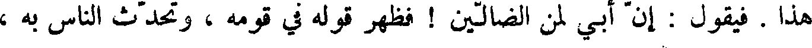
هذا . فيقول : إن أبي لمن الضالين ! فظهر قوله في قومه ، وتحدث الناس به ،
File: 000363.gt.txt (if the image is defective, simply delete all Arabic text and the line will be excluded)
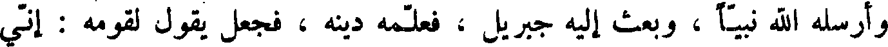
وإرسله الله نبيا ، وبعث إليه جبريل ، فعلمه دينه ، فجعل يقول لقومه : إني
File: 000364.gt.txt (if the image is defective, simply delete all Arabic text and the line will be excluded)
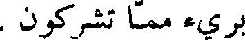
بريء مما تشركون .
File: 000365.gt.txt (if the image is defective, simply delete all Arabic text and the line will be excluded)
وبلغ خبره نمرود ، فأرسل إليه فيها ، ثم جعل إبراهيم يكسر أصنامهم ،
File: 000366.gt.txt (if the image is defective, simply delete all Arabic text and the line will be excluded)
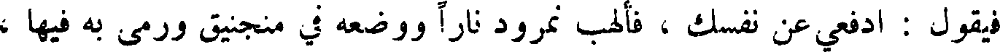
فيقول : ادفعي عن نفسك ، فألهب نمرود نارا ووضعه في منجنيق ورمى به فيها ،
File: 000367.gt.txt (if the image is defective, simply delete all Arabic text and the line will be excluded)
فأوحى الله إليها : أن كوني بردا وسلاما على إبراهيم ، فجلس وسط النار
File: 000368.gt.txt (if the image is defective, simply delete all Arabic text and the line will be excluded)
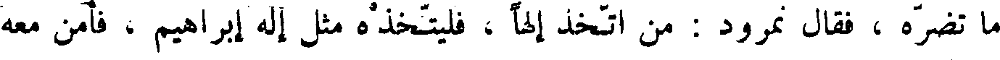
ما تضره ، فقال نمرود : من اتخذ الها ، فليتخذه مثل اله إبراهيم ، فأمن معه
File: 000369.gt.txt (if the image is defective, simply delete all Arabic text and the line will be excluded)
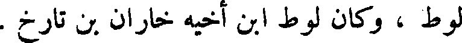
لوط ، وكان لوط ابن أخيه خاران ابن تارخ .
File: 000370.gt.txt (if the image is defective, simply delete all Arabic text and the line will be excluded)
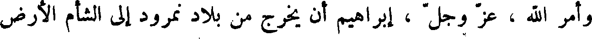
وأمر الله ، عز وجل ، إبراهيم أن يخرج من بلاد نمرود إلى الشأم الأرض
File: 000371.gt.txt (if the image is defective, simply delete all Arabic text and the line will be excluded)
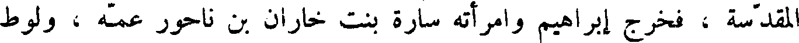
المقدسة ، فخرج إبراهيم وأمرته سارة بنت خاران بن ناحور عمه ، ولوط
File: 000372.gt.txt (if the image is defective, simply delete all Arabic text and the line will be excluded)
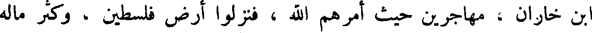
ابن خاران ، مهاجرين حيث أمرهم الله ، فنزلوا ارض فلسطين ، وكثر ماله
File: 000373.gt.txt (if the image is defective, simply delete all Arabic text and the line will be excluded)
ومال لوط ، فقال إبراهيم للوط إن الله قد كثر لنا مالنا وماشيتنا ، فانتقل منا
File: 000374.gt.txt (if the image is defective, simply delete all Arabic text and the line will be excluded)
من سبط . . .1 ويعقوب بن زبدي . . .2 ويحيى بن جابر بن فالي من سبط
File: 000375.gt.txt (if the image is defective, simply delete all Arabic text and the line will be excluded)
زبلون ، وفيلفوس من سبط اشر ، ومتى من سبط أشجر بن يعقوب ، وسمعي
File: 000376.gt.txt (if the image is defective, simply delete all Arabic text and the line will be excluded)
من سبط هرام بن يعقوب ، ويهودا من سبط يهوذا بن يعقوب ، ويعقوب من سبط
File: 000377.gt.txt (if the image is defective, simply delete all Arabic text and the line will be excluded)
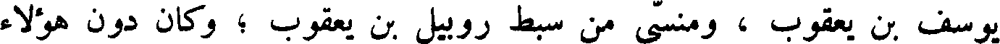
يوسف بن يعقوب ، ومنسى من سبط روبيل بن يعقوب ؛ وكان دون هؤلاء
File: 000378.gt.txt (if the image is defective, simply delete all Arabic text and the line will be excluded)
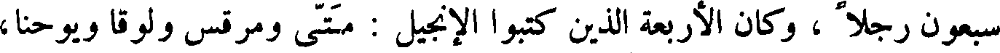
سبعون رجلا ، وكان الأربعة الذين كتبوا الإنجيل : متى ومرقس ولوقا ويوحنا،
File: 000379.gt.txt (if the image is defective, simply delete all Arabic text and the line will be excluded)
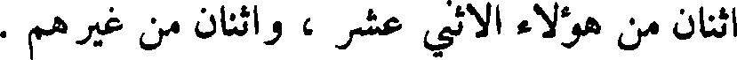
اثنان من هؤلاء ألاثنى عشر ، واثنان من غيرهم .
File: 000380.gt.txt (if the image is defective, simply delete all Arabic text and the line will be excluded)
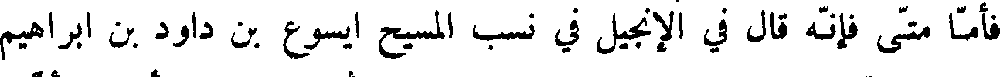
فأما متى فانه قال في الإنجيل في نسب المسيح ايسوع بن داود بن إبراهيم
File: 000381.gt.txt (if the image is defective, simply delete all Arabic text and the line will be excluded)
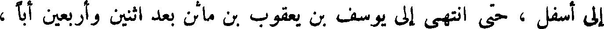
إلى اسفل ، حتى انتهى إلى يوسف بن يعقوب بن ماثن بعد اثنين وأربعين أبا ،
File: 000382.gt.txt (if the image is defective, simply delete all Arabic text and the line will be excluded)
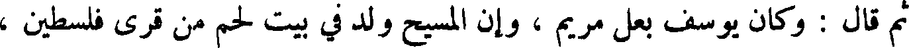
ثم قال وكان يوسف بعل مريم ، وان المسيح ولد في بيت لحم من قرى فلسطين ،
File: 000383.gt.txt (if the image is defective, simply delete all Arabic text and the line will be excluded)
وملك فلسطين يومئذ هيردوس ، وان قوما من المجوس ساروا إلى بيت لحم ،
File: 000384.gt.txt (if the image is defective, simply delete all Arabic text and the line will be excluded)
وعلى رؤوسهم نجم يهتدون به ، حتى رأوه ، فسجدوا له ؛ وان هيرودس ملك
File: 000385.gt.txt (if the image is defective, simply delete all Arabic text and the line will be excluded)
فلسطين أراد أن يقتل المسيح ؛ وان يوسف أخرجه واخرج أمه إلى ارض مصر ،
File: 000386.gt.txt (if the image is defective, simply delete all Arabic text and the line will be excluded)
فلما مات هيرودس رده ، فأنزله ناصرة جبل الجليل ؛ وانه لما كمل المسيح
File: 000387.gt.txt (if the image is defective, simply delete all Arabic text and the line will be excluded)
وبلغ تسعا وعشرين سنة صار إلى يحيى بن زكرياء ليصطنعه ، فقال له يحيى بن
File: 000388.gt.txt (if the image is defective, simply delete all Arabic text and the line will be excluded)
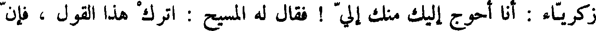
زكرياء : أنا أحوج إليك منك ألي ! فقال له المسيح : اترك هذا القول ، فان
File: 000389.gt.txt (if the image is defective, simply delete all Arabic text and the line will be excluded)
هكذا ينبغي أن يتم البر ، فتركه يحيى ، وان ايسوع خرج بتأييد روح الله إلى
To Save: `Ctrl+s`, make sure to choose `Webpage, complete`!